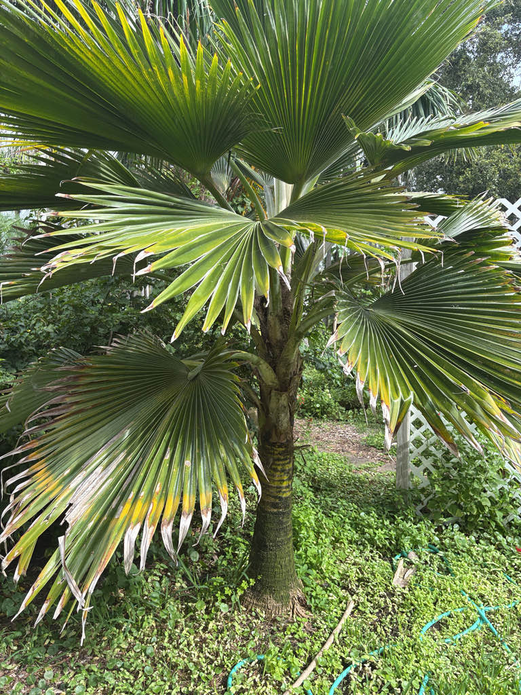

- Look at those leaves. The blade is divided only about a quarter to a third of the way toward the center, so instead of breaking into long ribbons, the segments stay joined through most of the leaf. From a distance the fronds can look almost like solid green panels. Those broad, barely-divided blades also catch wind easily — tropical storms can leave them dramatically shredded.
- The common name raises an immediate question: why is it called the Fiji Fan Palm if the species is generally considered native to Tonga? Its long history of cultivation and human movement across the Pacific has made its natural distribution genuinely difficult to reconstruct — and the name itself is a clue to that tangled history.
- In Fiji, the leaves were traditionally fashioned into fans and umbrellas for exclusive use by chiefs. The Fijian term ai viu covers both objects, and only one or two of these palms were typically kept in a village — enough to supply the chief's needs and no more.
The Fiji Fan Palm's native range is surprisingly hard to pin down. Most authorities, including Kew's Plants of the World Online, treat Tonga — specifically the islands of Vava'u and 'Eua — as its original home. Populations across a much wider Pacific arc, including Fiji, Samoa, the Marquesas, and Tokelau, appear to be ancient human introductions rather than natural dispersal.
The IUCN Red List classifies Pritchardia pacifica as Extinct in the Wild. No confirmed natural population survives anywhere — every one of these palms, including this one, descends from trees that people planted. That is precisely why the original range is so hard to reconstruct: there is no wild population left to point at.
Polynesian voyagers carried useful plants between islands, and palms such as this one became embedded in the landscapes and cultures of places far from their origins — which is almost certainly why the common name points to Fiji rather than Tonga. It arrived in Florida as an ornamental and is cultivated in the southern part of the state, where winters are warm enough to sustain it.
- The genus name honors William Thomas Pritchard (1829-1907), a 19th-century British consul in Fiji, adventurer, and author of Polynesian Reminiscences — which may be the simplest explanation for how a palm generally considered Tongan ended up carrying Fiji's name.
- Pritchardia is an exclusively Pacific genus, with roughly 29 named species scattered from Tonga and Fiji through French Polynesia to Hawaii, where the genus proliferated into at least 22 species — eight of which are now on the US Federal Endangered Species List. This one palm in the collection is a doorway into a much larger Pacific story.
- The association between this palm and political rank ran deeper than the objects made from it: the tree itself became a marker of authority, which is why a village kept only enough of them to serve its chief. Fans worked from the leaves also carry the Fijian name iri masei.
Its wildlife value in Florida appears limited. The fragrant flowers attract insects, and birds may consume the small dark fruit, but this non-native palm is not a documented host or significant food plant for Florida wildlife. Its real story here is human history — the ecology is a modest bonus.
Propagation is by seed only. Pritchardia palms do not sucker or spread clonally. Seeds can take several weeks to several months to germinate, and the palms are slow to reach reproductive maturity — typically 5 to 8 years or more.
One to four branched flower clusters emerge from the junction between each leaf stem and the trunk, and are shorter than or roughly equal in length to the leaf stems. Individual flowers are small, yellowish-green, fragrant, and bisexual — each one carrying both pollen-producing and seed-producing parts. A single palm can therefore potentially set fruit without another tree nearby.
Fruit is a small, smooth, spherical drupe roughly half an inch in diameter, ripening from reddish-brown to dark purplish-black. Each fruit contains a single seed.
Large, gently cupped green fan leaves up to four feet wide, held on smooth leaf stems of similar length. Notice how shallowly the blade is divided — the segments remain joined through most of their length, giving each leaf an almost solid appearance rather than the ribbon-like look of many other fan palms. Turn over a lower leaf and you will see a distinct pale, waxy coating on the underside.
The leaf stem edges are smooth with no teeth.
Solitary, smooth, grayish-tan, and ringed by the scars of old leaf bases. The trunk is relatively slender compared with the broad crown above it, giving the tree an elegant, upright silhouette.
Look up first: a full, rounded head of broad, bright green fan fronds, each one gently cupped rather than flat, held above a clean, lightly ringed trunk.
The most important thing to notice is how shallowly the blades are divided — instead of breaking into long strips like many fan palms, the segments stay joined through most of their length, so each frond can look almost like a solid green panel in still air. If any fronds look shredded at the tips, wind is the cause: those near-solid blades catch a storm like a sail.
Get close to a lower leaf and flip it over — the pale, waxy coating on the underside is easy to see and a reliable identification clue. The trunk stays relatively slender for the size of the crown above, giving the whole tree a top-heavy elegance.
Look between the leaf stems for flower clusters tucked inside the crown; if the palm is fruiting, small dark purplish-black drupes will be clustered there.
No known toxicity to people, dogs, or cats. The small fruits are not a food source — people simply don't eat them — but they are not toxic. The petiole margins are smooth with no teeth, so this is an easy palm to work around. Otherwise harmless.
Lethal yellowing is the main landscape concern for this palm in Florida. Pritchardia pacifica is classified as highly susceptible to the disease - caused by a phytoplasma and spread by an insect vector - and expert sources advise against planting it where lethal yellowing is established.
It has been documented in Manatee County, which makes this specimen's continued health a genuine point of interest.
Cold weather can spot or discolor the leaves, especially after an unusual freeze. New growth usually replaces damaged foliage once warm weather returns.
Plant this palm in a wind-sheltered microclimate. The broad, barely-segmented fan blades catch wind easily and can shred in tropical storms or strong gusts. When maintaining the palm, remove only fronds that are fully brown and dead — green or partly green fronds should be left in place.


- © Randall Carter (CC-BY-NC), via iNaturalist